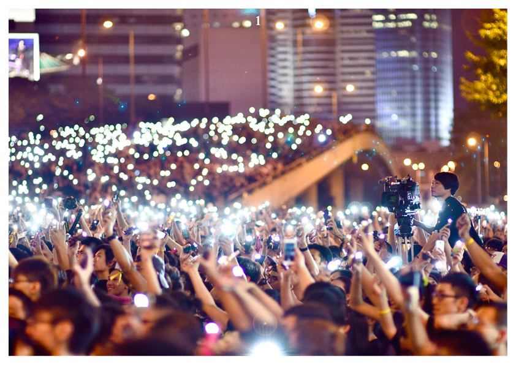
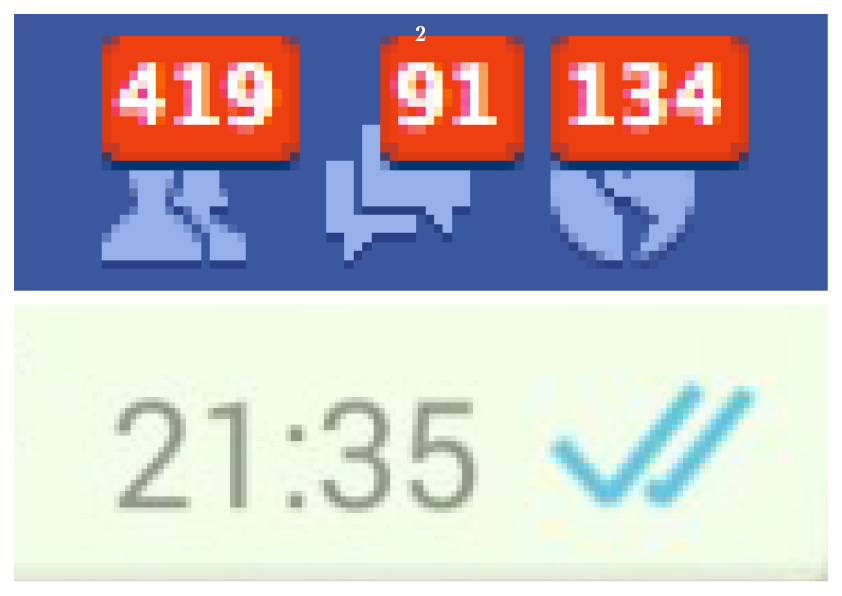
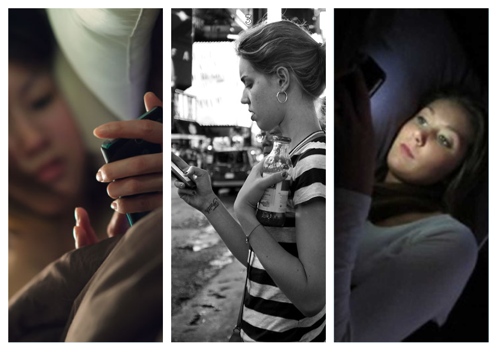
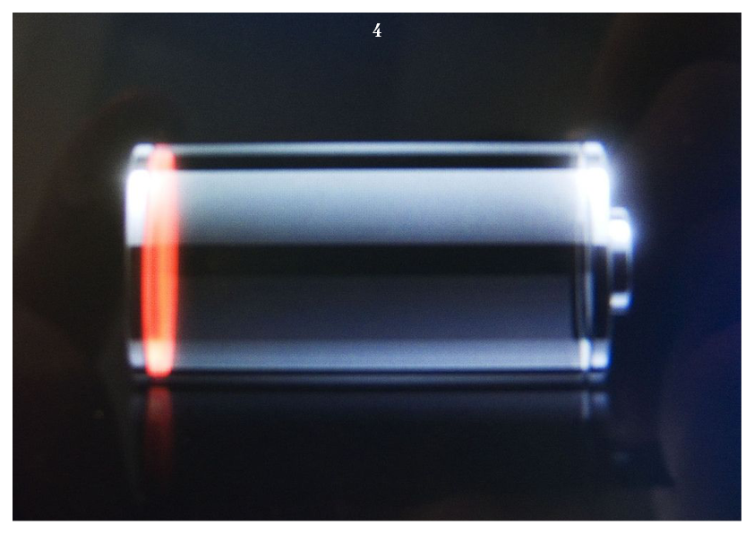
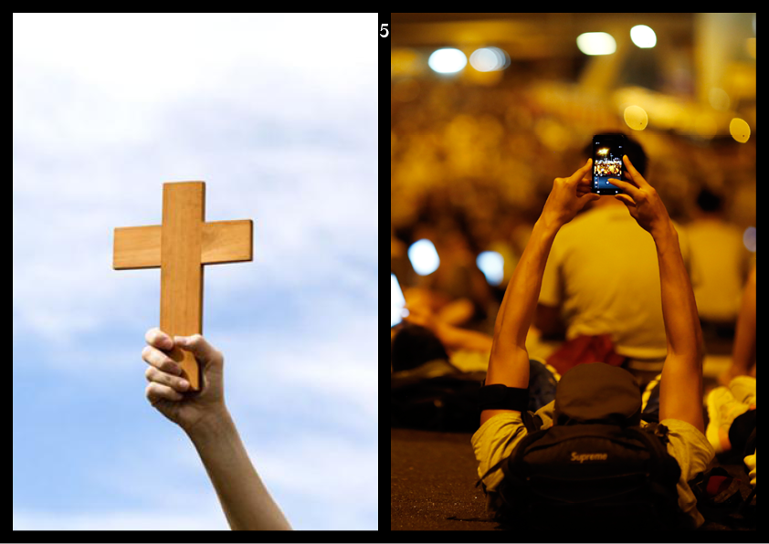
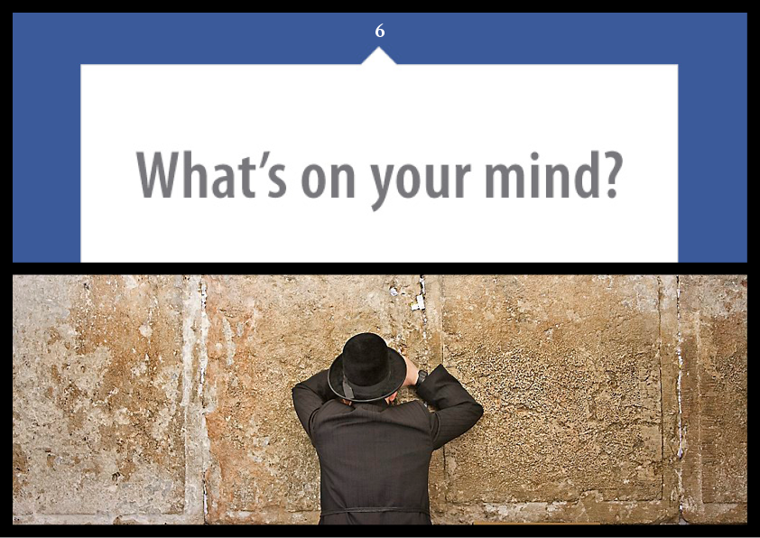
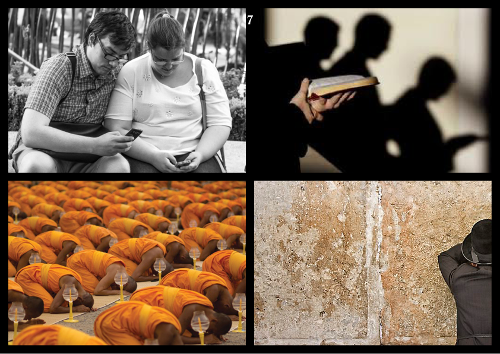
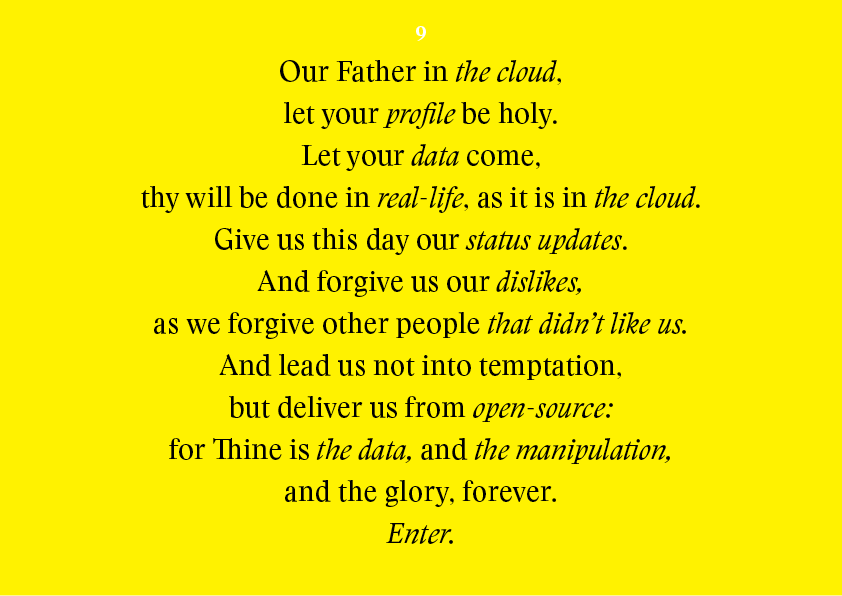
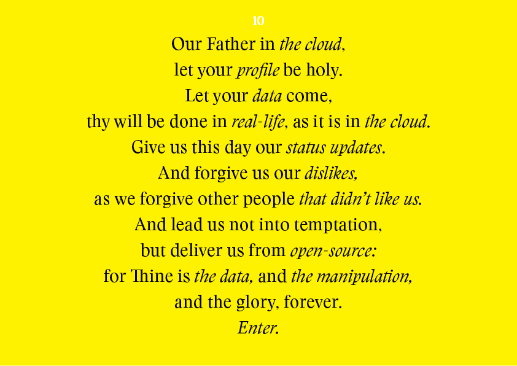

Schetsen
Dog and Pony
        Dog and Pony Tekst
Welcome here today, I am so happy that we have come together as one.
In the world of smartphones and social media we are constantly connected to the internet, each other, and the cloud.
We get (social) updates trough our social media. We share our thoughts and these data and input makes it that keeps us busy with our daily lives.
It gives us all the information we need. And we get high satisfaction out of it. But it also gives us a oppressive feeling, like having to check on it if you’ve received any new messages or having phantom vibrations in your pocket.
We use it 24h a day.
Get up? pick up your phone,
Are you bored? pick up your phone,
Having some lunch? pick up your phone,
Dead conversation? pick up your phone,
Before closing your eyes when going to sleep? pick up your phone!
Without it; we feel lost, confused and naked. Not knowing what to do next. When we lost it, and it is sometimes hard to get it back.
Its like we have become this ‘sect’ and we hold on to this every day.
We have embraced this social media like it is a religion. like a belief where we can not live without.
Checking on your phone is like making a short prayer. Carrying your phone around makes you feel complete. Not having Facebook makes you an Atheist. When your phone is empty you are lost. You are dedicated to your belief when you check your phone unconsciously You are touched by god if you feel phantom vibrations in your pocket. Suggestions on your timeline are to improve you as human being. When someone drops their phone, you are scared of what will happen to the consequences of unholiness, when he or she picks it back up.
My plan is to compare aspects of social media and human behaviour with traditions and religion. This will be a convincing presentation like religion as itself is convincing.
Thank you for your attention. May I complete this speech by shining a light on your souls. If you like, you can repeat me and do like I do:
Our Father in the cloud,
let your profile be holy.
Let your data come,
thy will be done in real-life, as it is in the cloud.
Give us this day our status updates.
And forgive us our dislikes,
as we forgive other people that didn’t like us.
And lead us not into temptation,
but deliver us from open-source:
for Thine is the data, and the manipulation,
and the glory, forever.
Enter.